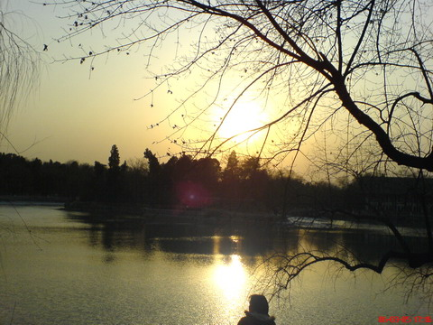

北大从来都是世界一流大学，这有什么可争论的！
2006/8/24 14:08:07

今天网上，突然看到又有人在暴炒北大的“一流、N流”问题，这世界不缺无聊的人，更不缺争先恐后成为无聊的人的人。所以，相信北大的“一流、N流”问题仍会继续被问题，一个能让那些口里缺乏葡萄、眼里太多葡萄、手里只有葡萄皮的人的脑电波多颤抖几次的问题。
北大从来都是世界一流大学，这有什么可争论的！相信北大的中文系是没有一个地球上的系敢比较的，北大的历史、哲学等系，大概敢叫板的地球系也没几个。北大这种类型的系还可以说出一大串，不服的就拿真本事来PK，叫嚷是没用的！
当然，北大也可以找出很多垃圾系，例如经济方面的，确实已经垃圾到严重影响北大声誉的程度，但这又怎么了，有哪个世界一流大学没有垃圾学科的？有哪个世界一流的大学所有学科都是世界一流的？而且，北大的垃圾学科在全国来说，已经不算太垃圾了，因为北大任何一个学科，可以肯定的是，即使是最垃圾的一个，在全国也在前五名！不服的，可以集合全国其它学校的任何一门学科来和北大PK！
还有，世界一流的标准本来就是多元化的，中国人为什么要遵守鬼佬的世界标准？特别在人文科学上，中国人为什么要按鬼佬的意识形态来标准自己？例如，鬼佬谈他们的基督教，中国人谈道教，难道鬼佬还敢说他们谈的道教比我们还一流？那么凭什么要按鬼佬谈他们基督教的标准来标准中国人谈的道教？
北大早就是世界一流大学，这一点根本无须讨论。现在唯一需要警惕的是，北大在世界一流上不能倒向别人的行业标准，北大要有自己世界一流的中国人的行业标准，为什么不能有一天，世界一流是按中国人的标准而标准！搞企业的都知道，标准权是最重要的，而这在世界一流大学这种问题上，也是一样的！
北大，之所以是北大，就是因为北大能特立独行，失去了特立独行，北大将不再北大。世界没有名字，世界由我们命名，让我们的标准成为世界的标准，因为世界本来就在我们脚下！
回复